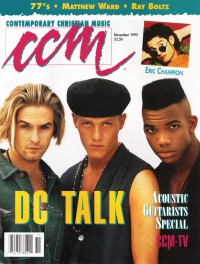

dc TalkOn the cover|  | November 1992
CCM | Media coverage:- Apr 1989 in CCM "Notebook: Christian Rappers: Takin' It To The Street", by Audrey T. Hingley
- Apr 1989 in CCM "New Artist Showcase: dc Talk", by Elisabeth Leighton Jones
- Apr 1990 in CCM "Rhythm, Rhyme & the New Word! Music", by Brian Quincy Newcomb
- Jul 1990 in Campus Life "Rhyme & Reason"
- Oct 1990 in CCM "In The News: Christian Rap Adds More Artists To It's Roster", by Dan MacIntosh
- Dec 1990 in CCM "Def, Not Dumb", by Bruce A. Brown
- Apr 1991 in CCM "In Concert: Go West Young Man Tour", by Bruce A. Brown
- 24 Jun 1991 in Christianity Today "Church In Action: Rhymin' and Rappin' D King", by Steve Rabey
- Jul 1991 in Harvest Rock Syndicate "Concert Review: Michael W. Smith, dc Talk", by Brian Quincy Newcomb
- Sep 1991 in CCM "In The News: A Time To Dance?", by Ana Gascón Ivey
- Dec 1991 in CCM "In Concert: Nu Skool Jam Tour", by T. L. Faris
- Mar 1992 in CCM "Getting The Message: Abortion", by Steve Rabey
- Apr 1992 in Campus Life "Expressions: dc Talk "Walls" music video", by Jim Long
- Jul 1992 in Syndicate "Cornerstone Concert Reviews: Main Stage, Saturday, July 4, 1992", by Jamie Lee Rake
- Nov 1992 in CCM "Putting (dc) Talk Into Action", by Jamie Lee Rake
- Jan 1993 in Syndicate "Free Form on The Hip-Hop Front", by Brian Quincy Newcomb
- Feb 1993 in CCM "In The News: Smitty / DC Talk Out To Change Your World"
- Mar 1993 in CCM "In The News: dc Talk Takes Stand Against Racism"
- Mar 1993 in The Lighthouse "Concert Review: Pittsburgh, PA", by Beth Blinn
- Apr 1993 in CCM "In Concert: West Palm Beach Auditorium, West Palm Beach, FL", by Melissa Ruggieri
- Jul 1993 in CCM
- Jan 1994 in Campus Life "Expressions: Radical News", by Jim Long
- Apr 1994 in CCM "In Concert: Knoxville Civic Auditorium, Knoxville, TN", by Rhonda Miskowski
- May 1994 in Campus Life "Expressions: dc Talk", by Jim Long
- May 1994 in Campus Life "Just The Facts: dc Talk"
- Jul 1994 in Campus Life "True Love Waits"
- 18 Jul 1994 in Christianity Today "News: 75-Year-Old Graham A Hit With Youth"
- Sep 1994 in Heaven's Metal "Concert Review: Michael Sweet (opening for Audio Adrenaline, dc Talk)", by Brian Rodgers
- Oct 1994 in CCM "At Last: Getting To Know dc Talk", by April Hefner
- May 1995 in CCM "In The News: Christian Music Finds Widespread Attention", by April Hefner, Mark A Smeby
- Sep 1995 in CCM "In The News: cd Talk Takes Center Stage: Film and Album set for Fall Release", by April Hefner, Debra Akins
- Nov 1995 in Campus Life "DC Talkin'", by Chris Lutes
- Nov 1995 in CCM "Critical Condition", by Todd Hafer
- Dec 1995 in CCM "The Rockford Files", by Gregory J Rumburg
- Feb 1996 in HM "Free At Last to do a nu thang (...like rock & roll)", by Brian Vincent McGovern
- Feb 1996 in HM "Concert Review: dc Talk", by Doug Van Pelt
- Mar 1996 in CCM "Erasing Racism", by Todd Hafer
- May 1996 in CCM "In Concert: Municipal Auditorium, Nashville, TN", by Michael Ciani
- Jul 1996 in Charisma "Spotlight: dc Talk", by Jimmy Stewart
- Jan 1997 in CCM "On The Beat: dc Talk Inks General Market Deal", by Debra Akins
- Apr 1997 in CCM "On The Beat: Jars of Clay, dc Talk score Music City Awards", by Gregory J Rumburg
- Nov 1997 in CCM "On The Beat: Give Peace A Change", by Ray Pierce
- Feb 1998 in CCM "On The Beat: Shining A Light: dc Talk, God's Property to Call For Racial Harmony", by Lindy Warren
- Sep 1998 in CCM "In Concert: E.R.A.C.E. Night, Willmar, Minnesota", by Doug Trouten
- Oct 1998 in CCM "Supermen", by April Hefner
- Nov 1998 in Campus Life "Out of this World", by Mark Moring
- Apr 1999 in CCM "In Concert: Supernatural Tour, World Arena, Colorado Springs, CO", by Steve Rabey
- Apr 1999 in CCM "On The Beat: Pope Visits St. Louis", by Brian Quincy Newcomb
- Sep 1999 in CCM "On The Beat: Jesus Freaks", by Trisha Hubbs
- Aug 2000 in CCM "On The Beat: Gotta Serve Somebody", by Sarah Aldridge-McNeece, Gregory J Rumburg
- Oct 2000 in CCM "Ask CCM: The Talk About dc Talk", by Anne Walters
- Jan 2001 in CCM "On The Beat: Scene Stealer", by Christina Farris
- May 2001 in CCM "O Brothers, Where Art Thou?", by April Hefner, Gregory J Rumburg, Melissa Riddle
- Aug 2001 in CCM "All Access: Falling Forward", by Marcia Bartenhagen
- Apr 2003 in CCM "Time Machine", by Paul Oak
- Jul 2003 in Charisma "Solo Act", by Chad Bonham
- Jul 2003 in Charisma "No More Plain Vanilla Music"
- Sep 2005 in CCM "Insider: Super Freaky", by Jessica Robin
- Nov 2005 in CCM "Industrybeat: Laurie Anderson, Dan Pitts, True Artist Managemant, dc Talk", by Jay Swartzendruber
- May 2013 in Christianity Today "Inside CT: Holy Hip-Hop Grows Up", by Katelyn Beaty
- Jun 2013 in CCM Digital "What's New: dc Talk (history)"
- 15 Aug 2015 in CCM Digital "Reuniting with dcTalk"
- 15 Jan 2016 in CCM Digital "Jesus Freak at 20", by Justin Sarachik
- Jul 2016 in Relevant "Slices: dc Talk is Finally Reuniting (on a cruise)"
Albums & reviews:1987: Christian Rhymes To A Rhythm1989: DC Talk1990: Nu Thang1991: Rap, Rock & Soul1993: Free At Last1994: Narrow Is the Road [video]1994: Extended Play Remixes with Scott Blackwell1995: Jesus Freak1997: Welcome to the Freak Show1997: Welcome to the Freak Show [video]1998: Supernatural1999: The Supernatural Experience [video]2000: Intermission: The Greatest Hits2001: Solo2002: Free At Last - The Movie2003: Free At Last: The Movie (10th Anniversary Edition)2003: Free At Last - The Music2007: Jesus Freak 10th Anniversary S.E.2008: The Ultimate Collection Award Summary (Nominations / Wins)Dove Awards1991 Dove Awards1992 Dove Awards1993 Dove Awards- Group of the Year
- Short Form Music Video: "Walls"
- Rap/Hip Hop/Dance Recorded Song: "Can I Get A Witness?"
- Rap/Hip Hop/Dance Recorded Song: "Walls"
1994 Dove Awards1995 Dove Awards- Group of the Year
- Short Form Music Video: "Luv Is A Verb"
- Long Form Music Video: Narrow Is the Road [video]
- Rap/Hip Hop/Dance Recorded Song: "Luv Is A Verb"
1996 Dove Awards- Song: "Jesus Freak"
- Group of the Year
- Artist
- Rock Recorded Song: "Jesus Freak"
1997 Dove Awards1998 Dove Awards- Group of the Year
- Short Form Music Video: "Colored People"
- Long Form Music Video: Welcome to the Freak Show [video]
- Rock Album: Welcome to the Freak Show
- Rock Recorded Song: "Day By Day"
1999 Dove Awards- Pop/Contemporary Album: Supernatural
- Group of the Year
- Artist
- Recorded Music Packaging: Supernatural
- Short Form Music Video: "My Friend (So Long)"
- Rock Recorded Song: "My Friend (So Long)"
2000 Dove Awards- Song: "Consume Me"
- Short Form Music Video: "Consume Me"
- Long Form Music Video: The Supernatural Experience [video]
- Rock Recorded Song: "Supernatural"
2001 Dove Awards2004 Dove Awards- Long Form Music Video: Free At Last: The Movie (10th Anniversary Edition)
Grammy Awards1996 Grammy Awards- Best Rock Gospel Album: Jesus Freak
1997 Grammy Awards- Best Rock Gospel Album: Welcome to the Freak Show
1998 Grammy Awards- Best Pop/Contemporary Gospel Album: Supernatural
2001 Grammy Awards- Best Rock Gospel Album: Solo
Billboard Music Video Awards1996 Billboard Music Video Awards- Best Clip, Contemporary Christian: "Jesus Freak"
1997 Billboard Music Video Awards- Best Clip, Contemporary Christian: "Colored People"
- Best Clip, Contemporary Christian: "Hope To Carry On"
1999 Billboard Music Video Awards- Best Clip, Contemporary Christian: "Consume Me"
Books about dc Talk- "Thunderbolts and Lightning: The Writing of Music for God" in Soul2Soul (Christopher L Coppernoll, 1998)
- "dc Talk" in The Encyclopedia of Contemporary Christian Music (Mark Allan Powell, 2002)
- "dc Talk" in The Billboard Guide to Contemporary Christian Music (Barry Alfonso, 2002)
- "Testimonies: Interviews With Christian Artists" in The Billboard Guide to Contemporary Christian Music (Barry Alfonso, 2002)
|